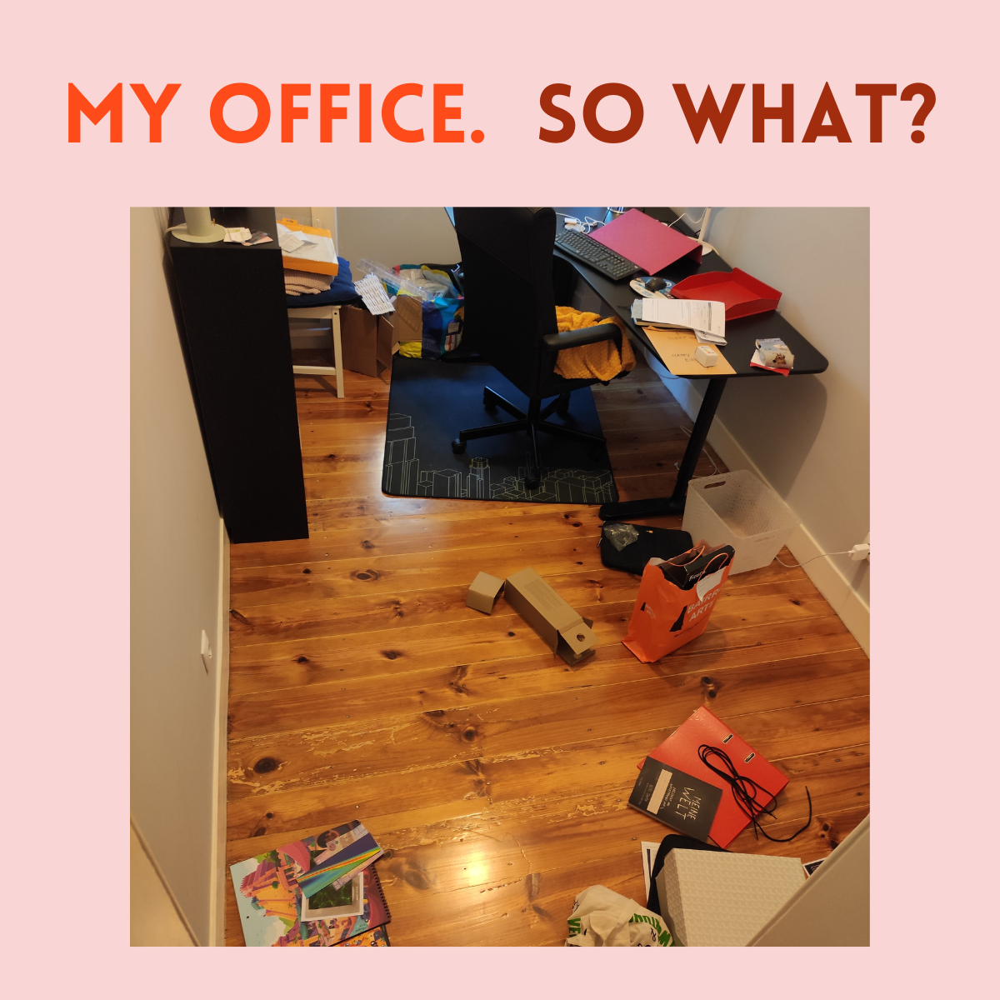

I’ve always struggled with tidying. Making my bed, gathering all the dirty clothes from the floor, loading the dishwasher and sanitizing the countertops—I struggle with all this to this day. But I feel better about it, and much more hopeful of finding a balance that works for me. Let me tell you why:
I used to think tidying was a moral thing. Good people kept their spaces tidy, and the ones who didn’t were, by extension, bad people.
It was never spelled out like that. Instead, this dichotomy was enforced very effectively through shame and societal expectations. I felt ashamed of my messy spaces, and I felt like that shame was justified.1 Regardless of whether I wanted my room to be clean, it was clear that I should want it and that it should be clean. Jokes about Einstein having a messy desk were of limited help, because we all knew that in the real world people made their beds and why won’t you just do this one thing?2
The choices were few. I could ignore the issue, pretend I didn’t care. This was easy up to a point, because I often really don’t care. I will walk over piles of things to get to where I need to be and it won’t phase me in the least. I will make space just for my laptop on my messy desk and work just like that. But this state is never too long lasting, because things keep piling up, and with them so does the shame. So I pull out my next card, the “try” option. I try to organize. To clean. To put everything in its place and have a pristine space. Here I can either fail, only complete some partial cleaning, and feel bad; or I can succeed, maintain a clean state for a few hours or days, and then start to feel bad as it deteriorates again. Everyone wins!
KC Davis changed the game. KC is the person behind StruggleCare.com, the TikTok channel DomesticBlisters, and much more. And this is what she has to say:
My first advice is to hear this sentence: Care tasks are morally neutral. They have nothing to do with being a good or bad person. We’re gonna stop thinking about whether something is good enough and we’re gonna start thinking about whether something functions in your home. And you are a person who deserves to function, even if you don’t like yourself.
Quote from KC Davis on the Infinite Quest Podcast’s March 2022 episode entitled How to Keep House While Drowning With DomesticBlisters
Right off the bat, she does away with the word “chores”. Chores are boring things that you need to do just because you’re expected to. Let’s forget about chores and focus on care tasks instead. Care tasks are entirely functional. You do them because doing them is required to make the spaces you inhabit function for you. You do them to care for yourself and your loved ones. And if doing them is not functional for you, if they don’t add anything you value to your life—you don’t need to do them!3
An example: If you have kids (and, let’s face it, even if you don’t), it can be difficult to have a pristine kitchen at any point. Dishes might pile up; counters may get soiled chaotically from little baking projects and snacks and spillages; fruit may be partially rotting somewhere; and when’s the last time you dusted in between that cupboard and the other thing? Well, perhaps the goal of completely cleaning your kitchen and keeping it that way forever is a tad unrealistic, dearie.
Perhaps you just internalized that a good mother, husband, carer, however-you-identify should maintain a clean kitchen at all times, otherwise you are failing your family, your gender—heck—your nation4.
Poppycock.
What matters is if the kitchen functions for you and your household. Are important surfaces sanitized or potentially contaminated? Is there some space in the sink in case someone needs to wash something? Is fresh fruit visible and easy to access for those seeking a healthy snack? Forget what someone whose opinion is irrelevant might think you should be doing to your kitchen. What do you need for it to be functional?
This is step 0. The most important step comes next: approaching all this without judgment. Without assuming that the way you take care of your spaces defines your value as a person. Without feeling shame for liberating yourself from what is, in fact, not important to you. Without beating yourself up for not completing care tasks that are important, even though you meant to. Because if the whole point is caring, shaming yourself for failing is going to accomplish what, exactly? Instead, try to talk to yourself as you would to a dear friend in distress. Console yourself, remind yourself that you are doing what you can and it’s ok, consider reaching out for help—all those things that are easier said than done, and nevertheless worth practicing.
Of course, figuring out what is functional for you and letting go of the shame is neither easy nor does it solve everything. If you still struggle to do tasks that are important to you, don’t despair. So do I. There are dozens of us, DOZENS!5 Perhaps one of KC’s many videos will be helpful to you, or you can consult her very accessible book. Oh, look, a resources list right below. How convenient!
Resources
Listen to KC on Infinite Quest (Spotify link): How to Keep House While Drowning With DomesticBlisters
Watch KC on TikTok: DomesticBlisters
Find similar content on her Instagram: strugglecare
Read KC’s book: How to Keep House While Drowning: A Gentle Approach to Cleaning and Organizing
Check out KC’s own Resources Page on her website
Bonus
You’re still here? I’m flattered.
For real, though, I believe this concept has the potential to be extended to other areas of life where you might be holding on to unnecessary and dysfunctional expectations. Think of all the things you believe you’re supposed to do in order to lead a better, purer life. Perhaps they include such classics as Wake Up Earlier, Read More Fiction, or Eat Fewer Chips. Many people try to tell you those are noble pursuits to be ignored at one’s own risk. Well, those people don’t know what’s good for you. And, to be frank, they probably don’t know what’s good for themselves either. Don’t take their advice; eject it from your mind. Then fill the space back with things that you actually have good reason to believe would make you happier. Maybe they’re even the same things! But they’ll taste different this way :)
Footnotes
Longtime fans will recognize this as a form of introjected regulation, a kind of external regulation within Self-Determination Theory that I described in a past life.↩︎
Of course, it’s never just one thing, but that’s a minor detail.↩︎
Pro-tip from Catieosaurus: If you hate folding laundry. If you just can’t stand it. Maybe consider… not. (Apply generously over all infected areas.)↩︎
*gasp*↩︎
This is a reference to Arrested Development, not a trustworthy figure. I’d count on there being billions of us, actually. Those of you who’ve reached care task–Nirvana, I salute you. Now get out. Or help me?↩︎
Reuse
Citation
@online{brazão2023,
author = {Vasco Brazão},
title = {I Used to Think Tidying Was Moral},
date = {2023-02-10},
langid = {en}
}